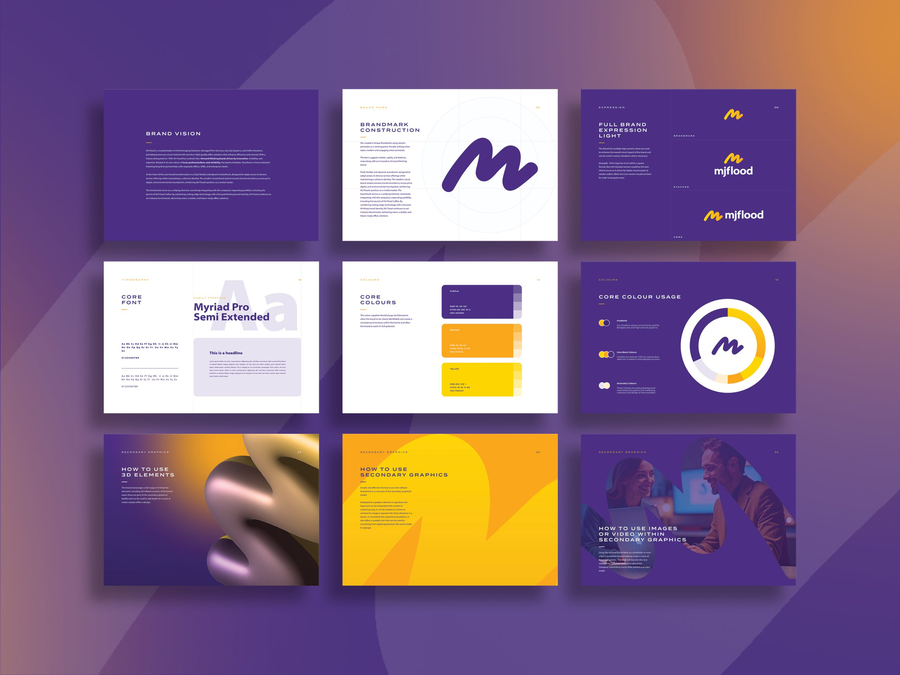
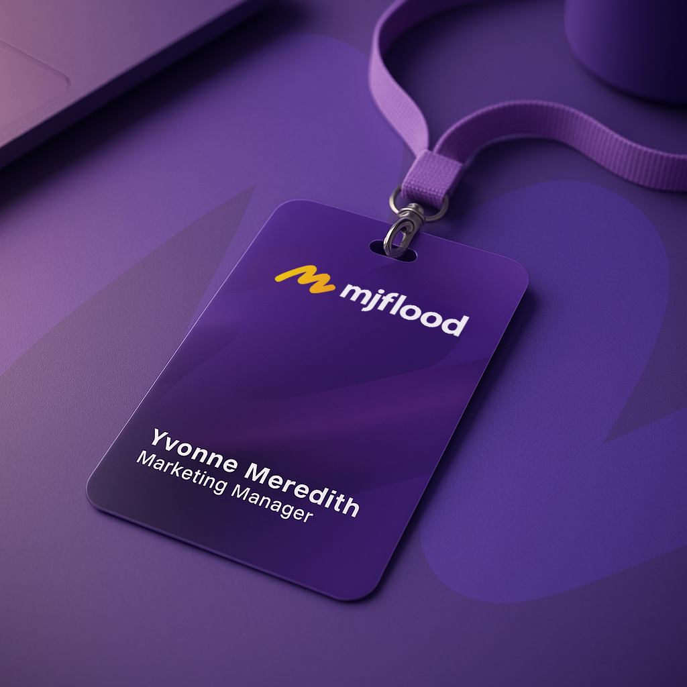
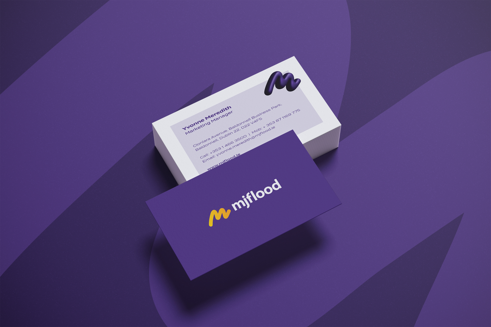
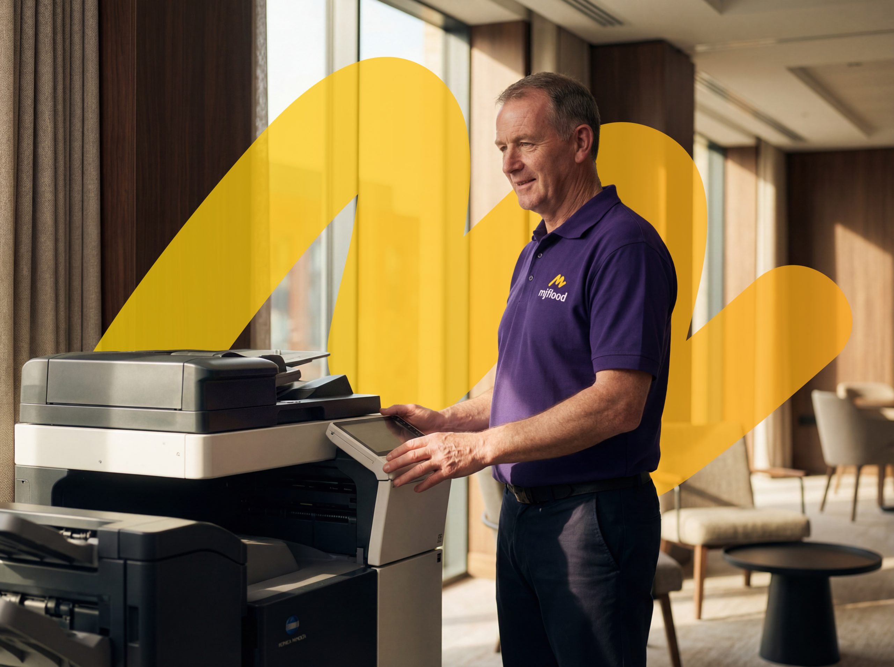
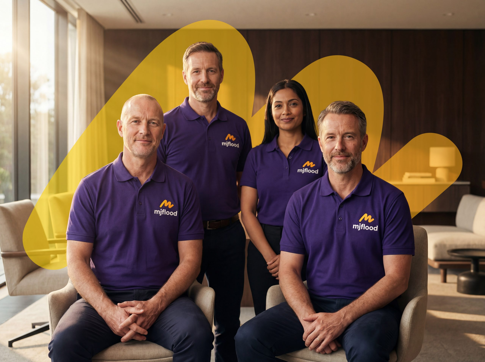
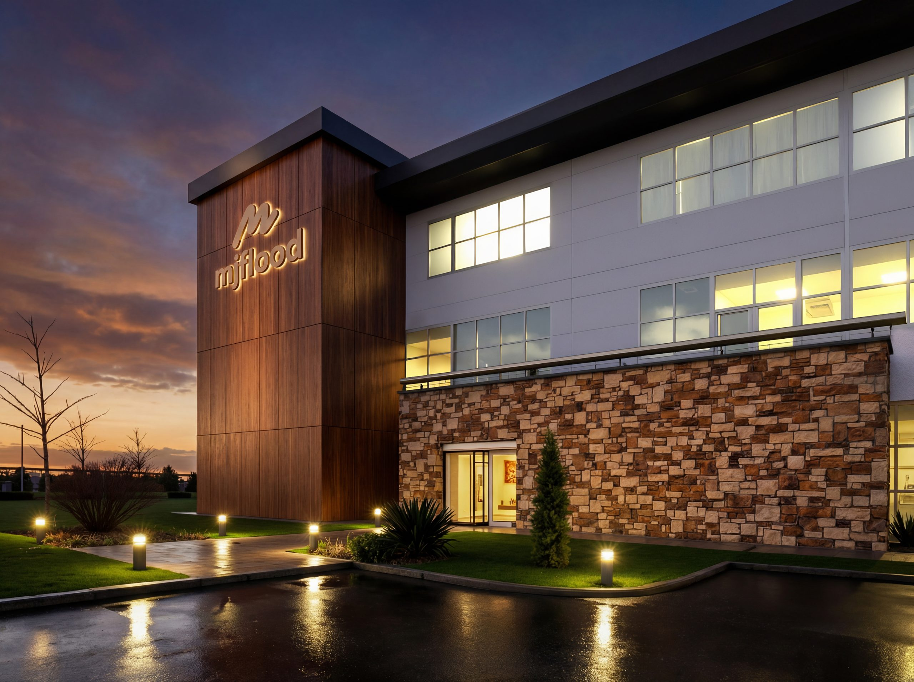
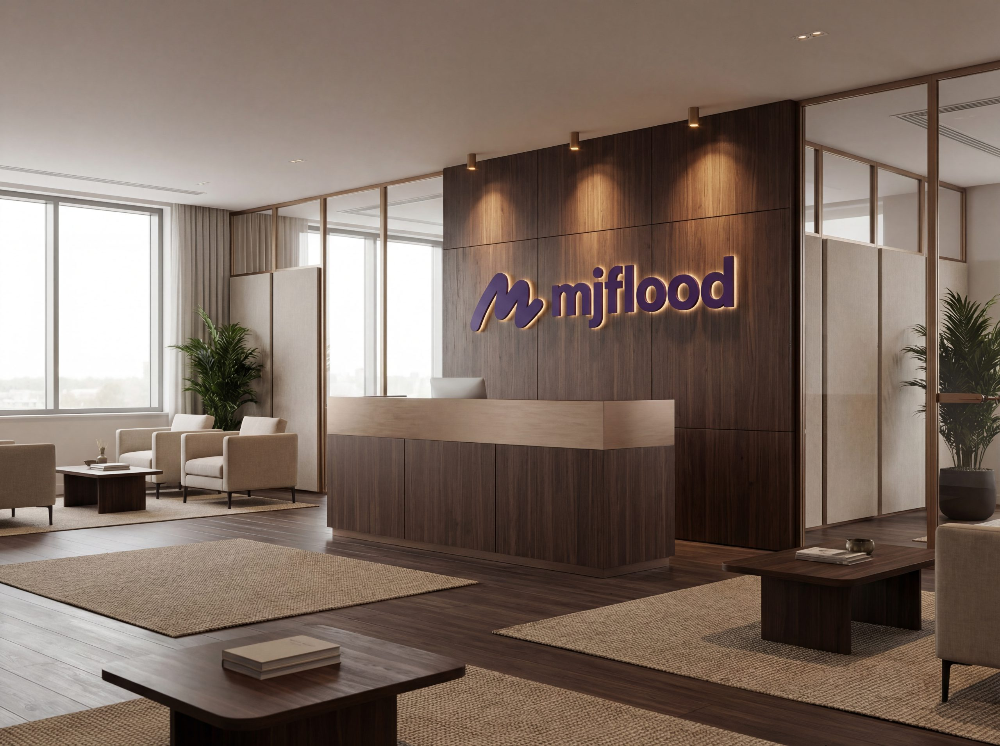
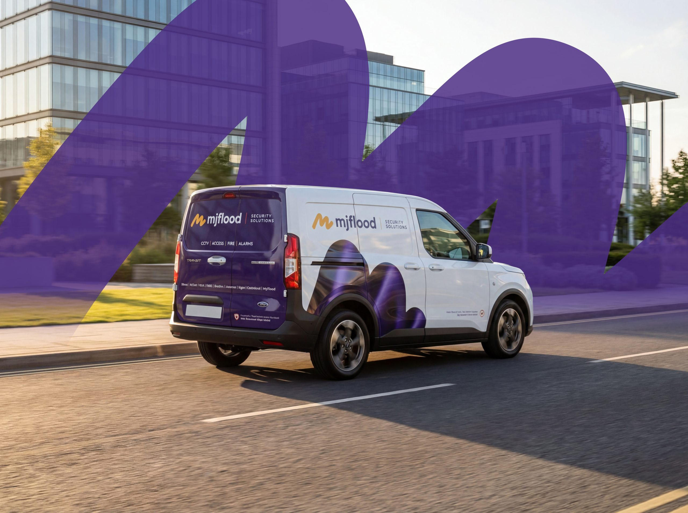
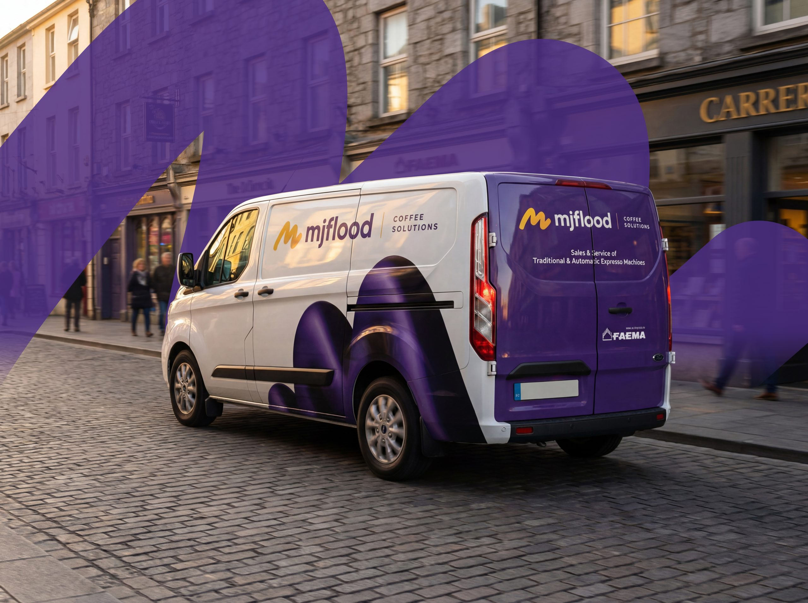
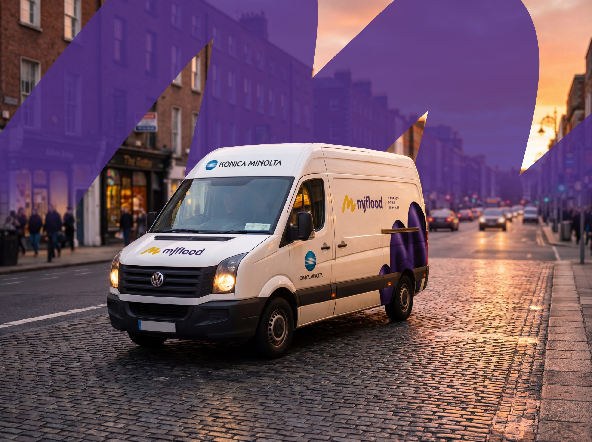

MJ Flood
Fluid, Flexible & Dynamic Branding
MJ Flood is one of Ireland's most established print and technology providers. As the business expanded into new sectors, the brand needed a clearer structure, one that could unify the core company while supporting specialist divisions. I modernised the masterbrand, designed a scalable sub-brand architecture and delivered a connected digital ecosystem.
MJ Flood is one of Ireland's most established print and technology providers. As the business expanded into new sectors, the brand needed a clearer structure, one that could unify the core company while supporting specialist divisions. I modernised the masterbrand, designed a scalable sub-brand architecture and delivered a connected digital ecosystem.

Evolving the masterbrand
The existing identity carried strong recognition but reflected a narrower, print-era positioning. I refined the brand to represent a broader service and technology group while protecting its heritage equity, modernising typography, colour and visual language to convey flexibility and contemporary capability. The result is a masterbrand confident enough to endorse multiple specialist businesses.


Structuring a growing group
With divisions such as Coffee and Security emerging, clear relationships between businesses became essential. I designed a flexible brand architecture that positions MJ Flood as the parent brand while giving each division a distinct expression: consistency across the group, with room for sector expertise to lead.


A connected digital ecosystem
To carry the rebrand online, I designed and delivered three interconnected websites: the corporate site, MJ Flood Coffee and MJ Flood Security. Each platform is tailored to its audience but shares one design system, navigation logic and brand language, so the experience holds together no matter where a customer enters.
The outcome
The rebrand gives MJ Flood a coherent platform for ongoing diversification: stronger consistency across three divisions, improved cross-divisional navigation and referrals, growth in digital enquiries across Coffee and Security, and clearer recognition of MJ Flood as a diversified technology group.






